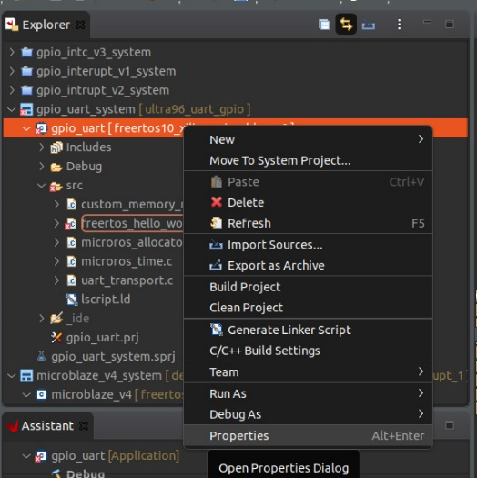
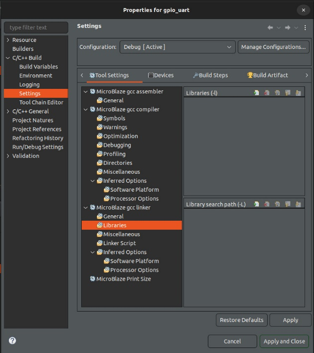
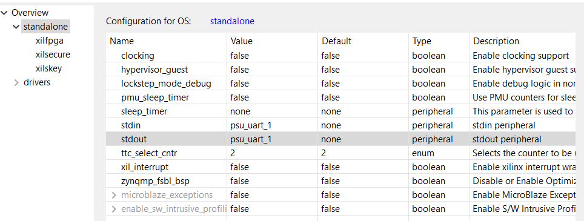
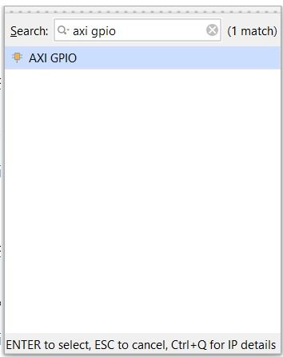
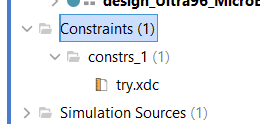
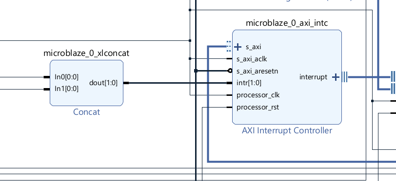

Introduction
Background:
The proliferation of robotics in the domain of edge devices necessitates efficient communication among these devices. To address this need, µROS was developed as a user-friendly tool for managing communications in robotics.
Purpose:
Efficiency in computing substrates is critical to the success of robotic applications. While various platforms exist, FPGA has emerged as a promising substrate for robotic applications. However, µROS is not compatible well with FPGA and our work presents an implementation of µROS in MicroBlaze, an FPGA typed microprocessor.
Methods:
First, we would develop the basic generic µROS infrastructure to MicroBlaze FPGA in an intelligent and efficient manner. We then improved the current MicroBlaze support for µROS by using more advanced data transfer methods like Interrupts.
Results:
Development of an infrastructure that combines the capabilities of MicroBlaze with the functionality of µROS and has proven by communication demos.
Conclusion:
Our developed infrastructure demonstrates the feasibility of having µROS on an FPGA processor and paving the way for further improvement in the future.
Setup
- Ubuntu 22.04.4 LTS
- Xilinx Ultra96 Zynq UltraSCALE+ (NOT V2 !!)
- Avnet JTAG
- microUSB to USB-A
- Power Brick
TODO:
- Hello World -> Hello ROS
-
Add files to md book vivido project and XSA file (check we can send vivato project proparly)
- Final Project (latest code change vitis)
- XSA (w and w/out GPIO)
- uROS ws (the whole file)
- BDF master
- Review files
- Add chapters from Michael? (How to download vitas and so on….)
- Update introduction (using linux versions and so on)
- Chapter with finished code (ROS controller by GPIO)
- Link to XSA file inside create Vitis project
- Publish book
-
Add Code over view
- Stack size
-
How to run. (finish)
- Add chapter of run ros on computer
- first open ROS in terminal, then build project then run project
Download Software
Basic Information
In our project we will use the software called Vitis unified software platform from Xilinx It includes 2 main softwares
- Vitis – IDE for programing ther FPGA and running the code
- Vivado – for creating the hardware for the FPGA
This is a tool that combines all aspects of Xilinx® software development into one unified environment. The Vitis software platform supports both the Vitis embedded software development flow, for Xilinx Software Development Kit (SDK) users looking to move into the next generation technology, and the Vitis application acceleration development flow, for software developers looking to use the latest in Xilinx FPGA-based software acceleration.
The Vitis™ software platform consists of an integrated design environment (IDE) for interactive project development, and command-line tools for scripted or manual application development. The Vitis software platform also includes the Vivado® Design Suite for implementing the kernel on the target device, and for developing custom hardware platforms.
Download files
Go to Vitis (SW Developer) and download the installer for your operating system
We worked with version 2022.2: (Linux and windows versions)
Installation Tutorial (Windows)
- open .EXE file
- click next

- Login to your account of xilinx (if you don’t have, register one)

- Choose Vitis

- In the next screen, we need to choose the products we want to install. For the full installation you will need 245 GB disk space
 If you don’t have the space requirement, the only products we need to choose for our project are:
If you don’t have the space requirement, the only products we need to choose for our project are:

For the SoCs, you can also remove Zynq-7000 and Zynq UltraScale + RFSoC because our board is Zynq UltraScale + MPSoC. The vitis Model composer is also optional so if you still don’t have enough disk space, buy a new one
- Click i agree to all the license agreements and then install regualry\
Installation Tutorial (Linux)
Download the installer from the download page only this time choose the one for linux
-
Right click on the bin file → properties → Permissions → Check the Execute option

-
Open Terminal inside the folder contains the bin file (Or open terminal then cd to the path contains the bin file)
-
Run the following commands: (To get the file name easy)
ls -ltr
-
Then type the command: sudo ./File_Name For example:

-
then type your password and then it should open the xilinx installer

-
Then its the same like for the windows.
-
Open terminal and type in the command (check the vitas version):
source <Vitis_install_path>/Vitis/2022.2/settings64.sh
In my case the path was:
/tools/Xilinx/Vitis/2022.2/settings64.sh
Then to lunch the vitis ide type in
vitis
(For the other apps like vivado, vitis_hls do the same just source to the right path)
Installing Cable Drivers (Only for linux)
During the installtion we can’t select the option to install the cable drivers and it needs to be done manually:
cd <install drivers path>
in my case it was
<Vitis Install>/data/xicom/cable_drivers/lin64/install_script/install_drivers/

then run the command:
sudo ./install_drivers

Possible Error
If the installer hang on the "Generating installed device list" step Open terminal and type in the command:
sudo apt-get install libtinfo5
as documented here
BDF Files
Your next step will be to add the needed Avnet Board Definition Files to your Vivado file path.
Download
The source is https://github.com/Avnet/bdf click on code and and then click download zip
for Ultra96 (v1) board you can download directly from here
V1 Board
V2 Board
On Your Computer
After you extract the ZIP folder, you will need to copy the desired BDF folders dicitly to the following directory
<your_path>\Xilinx\Vivado\<version>\data\boards\board_files
where version is 2022.2 for example Pay attention, as some of the borads sit under the deprecated folder
Install ROS and Create micro-ROS Firmware inside Ubuntu 22.04
Install ROS 2
Use the following link to download and set up ROS 2:
ROS 2 Installation Instructions
Follow these steps inside the page:
-
Set locale (you can use the following to check if OS supports UTF-8 in your terminal)
echo -e '\xe2\x82\xac'if UTF-8 is supported it should print out euro symbol
€ -
Setup Sources
-
Install ROS 2 packages
-
Environment setup
Install micro-ROS Build System
Now we need to create the micro-ROS build system.
The following steps were taken from (there is no need to use the link):
micro-ROS Build System Instructions
Make sure to replace ROS_DISTRO with the desired ROS version for us its "humble".
Source the ROS 2 Installation
source /opt/ros/$ROS_DISTRO/setup.bash
Create a Workspace and Download the micro-ROS Tools
mkdir microros_ws
cd microros_ws
git clone -b $ROS_DISTRO https://github.com/micro-ROS/micro_ros_setup.git src/micro_ros_setup
Update Dependencies Using rosdep
sudo apt update && rosdep update
rosdep install --from-paths src --ignore-src -y
Install pip
sudo apt-get install python3-pip
Build micro-ROS Tools and Source Them
colcon build
source install/local_setup.bash
Create Firmware for the Microblaze
Now we need to create the micro-ROS libraries.
The following steps were taken from (there is no need to use the link):
Creating Custom Static Library Instructions
Run the Following Command and Create the Firmware Directory
ros2 run micro_ros_setup create_firmware_ws.sh generate_lib
Create colcon and Toolchain Files
touch my_custom_toolchain.cmake
touch my_custom_colcon.meta
Copy and paste from the supplied files into the created files.
my_custom_colcon.meta
my_custom_toolchain.cmake
Inside the Cmake file, change the following lines according to the correct Xilinx version.
# SET HERE THE PATH TO YOUR C99 AND C++ COMPILERS
set(CMAKE_C_COMPILER /tools/Xilinx/Vitis/2022.2/gnu/microblaze/lin/bin/mb-gcc)
set(CMAKE_CXX_COMPILER /tools/Xilinx/Vitis/2022.2/gnu/microblaze/lin/bin/mb-g++)
Inside the colcon file, you can change the properties of the micro-ros (such as number of nodes)
"rmw_microxrcedds": {
"cmake-args": [
"-DRMW_UXRCE_MAX_NODES=1",
"-DRMW_UXRCE_MAX_PUBLISHERS=5",
"-DRMW_UXRCE_MAX_SUBSCRIPTIONS=5",
"-DRMW_UXRCE_MAX_SERVICES=1",
"-DRMW_UXRCE_MAX_CLIENTS=1",
"-DRMW_UXRCE_MAX_HISTORY=4",
"-DRMW_UXRCE_TRANSPORT=custom"
]
},
Create Firmware – Create the Build Directory and .a File
ros2 run micro_ros_setup build_firmware.sh $(pwd)/my_custom_toolchain.cmake $(pwd)/my_custom_colcon.meta
Files
We add are workstation files for your convinace.
The filnes include all you need to start working build and everything including an image pipline.
ros2_ws
microros_ws
Current Problems
Directory Structure:
In one of the updates of ROS, the directory structure of the files changed.
From:
#include <rcl/rcl.h>
To:
#include <rcl/rcl/rcl.h>
The problem is that the #include lines inside the files are not compatible with the new version.
The current solution is to build the project and then to add links to each subdirectory needed so the compiler will see these directories as written in the includes (for example – add link to the first rcl directory).
Wanted solution – probably a CMake file problem.
Current Solution: during the build of the code inside vitis, we will create links for the sub files (explained in ROS project in Vitis)
Hello World
This examples will make sure you have every thing setup proparly to start working. Make sure to run Xilinx Hello word in a new project, then you can change it to Hello ROS.
Hello Microblaze
In this tutorial we will explain step-by-step how to create basic freeRTOS application running on the MicroBlaze that transmit few messages.
Below is the xsa design of ultra96 with microblaze to work with freeRTOS:
Download The XSA File
You will need the design in XSA format to open the project. Download the file and put it in the desired folder
file 1 (ddr, without gpio)
Open New Project
-
go to File - New - Application Projetc
-
click next

-
Go to the tab “Create a new platform from hardware (XSA)
-
Click browse and go to the the XSA file and choose it

-
then click next. create a new system project and choose from the target processor the microblaze_0
-
Under operating system, choose freertos10_xilinx

-
Choose a code template (You can choose FreeRTOS Hello World to test everythink works as neeeded)
-
Click finish
-
Now we need to enable Vitis to access the right port. open the terminal and give permissions to access the port
sudo chmod 666 /dev/ttyUSB*
- Before running, choose the right port in Vitis
- Under Vitis Serial Terminal (One tab to the left of defualt tab 'Console')
- Press the green plus to add a serial connection.
- Fill in the settings.
now you can run the program
11. Go to the terminal of the MicroBlaze and the result should be -

Hello ROS
In this tutorial we will explain step-by-step how to create a basic ROS application running on the MicroBlaze that transmit a few messages.
Downloading XSA and Starting a new project
- Download the fallowing file, it includes all the needed hardware to run ROS on the Microblaze: ROS_design.xsa
- Start a new 'Hello Microblaze' project like descibed in Hello Microblaze
- Change the 'freertos_hello_world.c' to the fallowing file.
Add UART
First Step – Add output of IRQ from ZYNQ to MicroBlaze
We want to connect PS_PL_irq_uart1 line from ZYNQ to MB xlconcat ip
- Double click on ZYNQ IP to open Re-customize IP window.
- Add output to ZYNQ - Go to PS-PL Configuration.
- In the window choose - General->Interruptd->PS to PL->UART-UART1 and set to 1

- Connect port to MicroBlaze change xlconcat size to 2 and connect to ZYNQ PS_PL_irq_uart, Click Validate design
Second Step – Add AXI Connection to MicroBlaze (not sure if necessary)
- Add ports to ZYNQ:
- Go to PS-PL Configuration.
- In the window, choose Slave Interface -> AXI HP -> AXI LPD and set ‘v’.
- Make sure AXI LPD Data Width is 12.

- Connect to bus:
- Run connection automation.
There might be a good explanation here: Xilinx Support
How to create ROS project in vitis
Step 1: Copy ROS .c Files to src Directory
- Copy necessary .c files (e.g., allocator) to the
srcdirectory. - These files contain functions for micro-ROS, and the main files to run the program.
Files:
All files needed to run uROS.
main.c
custom_memory_manager.c
microros_allocator.c
microros_time.c
uart_transport.c
Step 2: Create a Link for the micro-ROS Directories
- Go to the properties of the project.
 - Navigate to:
C/C++ Build -> Settings -> MicroBlaze gcc compiler -> Directories.

- Click "Add" (top right corner of the screen).
- Insert the link to the
microblaze_wsinclude file:/<path>/microros_ws/firmware/build/include.
Step 3: Create a Link for the .a File
- Go to the properties of the project (same as before).
- Navigate to:
C/C++ Build -> Settings -> MicroBlaze gcc linker -> Libraries. - There are two boxes there:

- Under "Libary search path (-L)" insert the path to the
.afile (the folder of the.afile):/<path>/microros_ws/firmware/build/. - Under "Libraries (-l)," click "Add" (top right corner of the upper box) and add the flag
microros.
Step 4: Configure UART for microblaze
- Ensure the input to the microblaze is the UART:
- Under the design wrapper/platform (green box), go to
platform.spr.

- Navigate to:
Board Support Package -> Modify BSP Settings.

- Go to
Overview -> Standaloneand changestdinandstdouttopsu_uart_1(and click OK).

- Under the design wrapper/platform (green box), go to
Step 5: Address Problem with micro-ROS Directories
- Due to changes in the directory structure of micro-ROS, there might be problems building the code. Additional directories need to be included for the compiler.
- Go to the properties of the project.
- Navigate to:
C/C++ Build -> Settings -> MicroBlaze gcc compiler -> Directories. - Click "Add" (top right corner of the screen).

- Insert the link to the first directory in the tree for each missing file. For example:
/<path>/microros_ws/firmware/build/include/rcl.-
The file itself is at:
/<path>/microros_ws/firmware/build/include/rcl/rcl/rcl.h.
-
GPIO & Interrupts
We created for testing 2 AXI_GPIO objects: one for inputs and one for outputs. Then we enabled interrupts for the AXI_GPIO used for inputs and connected it to the interrupt controller.
Hardware Side
Add AXI_GPIO Block
- First step is to ad the IP. right click on the mouse and choose ADD IP. Then you need to choose the wanted IP and add it to the design. 
- Set all inputs/all outputs for simple use.

- Use “Run Connection Automation” (it will add this part that we will remove later).

Connect to External GPIO (pins and etc.)
- Press the ‘+’ near the word GPIO and then right-click on the line under and choose make external.

- Now we can delete the wire and pin connected to the GPIO name (in orange).

Define the Physical Connection
- Add a source file:
- Go to ‘Source’ -> ‘Constraints’ and then right-click and choose ‘Add Sources’.

- Choose ‘Add or create constraints’.

- Then choose create file.

- Click ‘ok’ and then ‘finish’.
- Go to ‘Source’ -> ‘Constraints’ and then right-click and choose ‘Add Sources’.
- Now open the file and add the code to config the board.

How to Connect the Ports from the XSA to GPIO
- We will define 2 things for each port: their type (voltage) and actual connection (need to find the pin mapping of the board; D7 is an example):
The commandset_property IOSTANDARD LVCMOS18 [get_ports {pin_out[0]}] set_property PACKAGE_PIN D7 [get_ports {pin_out[0]}][get_ports {pin_out[0]}]returns the object of thepin_out[0](the name we chose for the port).
Example:
An example of a project with 2 AXI GPIO devices. one for input ports and one for output ports.


The corresponding xdc file
# HD_GPIO0 / connector 3
set_property PACKAGE_PIN D7 [get_ports gpio_io_o_0[0]]
set_property IOSTANDARD LVCMOS18 [get_ports gpio_io_o_0[0]]
# HD_GPIO1 / connector 5
set_property PACKAGE_PIN F8 [get_ports gpio_io_o_0[1]]
set_property IOSTANDARD LVCMOS18 [get_ports gpio_io_o_0[1]]
# HD_GPIO2 / connector 7
set_property PACKAGE_PIN F7 [get_ports gpio_io_i_0[0]]
set_property IOSTANDARD LVCMOS18 [get_ports gpio_io_i_0[0]]
# HD_GPIO3/ connector 9
set_property PACKAGE_PIN G7 [get_ports gpio_io_i_0[1]]
set_property IOSTANDARD LVCMOS18 [get_ports gpio_io_i_0[1]]
Connect Interrupts
- Open the AXI_GPIO properties and choose “enable interrupts”.

- In our design, the interrupt controller
intr(interrupt request) is connected through the “Concat” object.
 - We will go to the Concat object and add a port. Then we will manually connect the irq pin from the AXI_GPIO to the open In pin.

- Then press “Validate design” and you will see the added input to the interrupt controller.

Software Side
After we create a project with the AXI GPIO block we will have some new files we can include (we won’t be able to include these files if there is no AXI_GPIO IP in the XSA file).
Needed Includes
/* GPIO includes */
#include "xil_io.h"
#include "xgpio.h"
Defines of the AXI GPIO IPs
We had one IP for inputs and one for outputs. The LED defines are for choosing which pins to use. The channel is in case you enabled 2 channels in the Vivado for the AXI_GPIO object. We found the ID in “/<project_name>/export/<project_name>/sw/<project_name>/freertos10_xilinx_microblaze_0/bspinclude/include/xparameters.h”.
/* GPIO defines */
#define GPIO_DEVICE_ID_OUT XPAR_GPIO_0_DEVICE_ID // ID of the GPIO object
#define LED 0x01
#define LED_CH 1
#define LED_DEL 10000000
#define GPIO_DEVICE_ID_IN XPAR_GPIO_1_DEVICE_ID
Create Object (“class”) that will Work with the IP
/* GPIO variables */
XGpio Gpio_out;
XGpio Gpio_in;
Initialize and Perform Read/Write
// INIT GPIO OUT OBJECT
Status = XGpio_Initialize(&Gpio_out, GPIO_DEVICE_ID_OUT);
if (Status != XST_SUCCESS) {
xil_printf("GPIO OUT INIT fail!");
}
// Write to GPIO object
XGpio_DiscreteWrite(&Gpio_out, LED_CH, BUTTON_VOLTAGE); // set GPIO to OFF maybe set to 0x01 for as voltage src
// INIT GPIO IN OBJECT
Status = XGpio_Initialize(&Gpio_in, GPIO_DEVICE_ID_IN);
if (Status != XST_SUCCESS) {
xil_printf("GPIO IN INIT fail!");
}
// Read from GPIO object
button_red_1 = XGpio_DiscreteRead(&Gpio_in, BUTTON_CH);
Work with Interrupts
Because we work with an operating system, we need to create a function that will work as ISR and then let the OS do the rest of the work. In general, you need to tell the OS which function will be used as ISR.
Good explanation: FreeRTOS Xilinx MicroBlaze
In general:
- Get the ISR id. You will have the define
XPAR_INTC_0_GPIO_1_VEC_IDunder “/<project_name>/export/<project_name>/sw/<project_name>/freertos10_xilinx_microblaze_0/bspinclude/include/xparameters.h”. - Get the interrupt controller id. You will have the define
XPAR_INTC_0_DEVICE_IDunder “/<project_name>/export/<project_name>/sw/<project_name>/freertos10_xilinx_microblaze_0/bspinclude/include/xparameters.h”. - Declare the function that will be used as ISR.
- Use
xPortInstallInterruptHandlerto set the function as interrupt handler. - Enable interrupt with
vPortEnableInterrupt.
/* Interrupts */
#define INTC_DEVICE_ID XPAR_INTC_0_DEVICE_ID
#define INTC_DEVICE_INT_ID XPAR_INTC_0_GPIO_1_VEC_ID
Status = xPortInstallInterruptHandler(INTC_DEVICE_INT_ID, myInterruptHandler, NULL);
vPortEnableInterrupt(INTC_DEVICE_INT_ID);
Current Problem
These 2 functions are defined in the portmacro.h file with uint8_t as the first argument. In the port.c files, there is a define XPAR_XILTIMER_ENABLED that sets the first argument as uint16_t and that creates the error “undefined reference to xPortInstallInterruptHandler”.
In order to let the function compile, we need to set this var to 0.
Right now the interrupts don’t work.
Using Polling to Send RTOS Messages
Overview
This project demonstrates the use of polling to send messages in a Real-Time Operating System (RTOS) environment using FreeRTOS on an Ultra96 board with MicroBlaze. The project involves toggling an LED using GPIO and publishing messages via micro-ROS.
The fallowing code uses the latest XSA file. The latest code files
Project Structure
Includes
- FreeRTOS Includes:
FreeRTOS.h,task.h,queue.h,timers.h
- Xilinx Includes:
xil_printf.h,xparameters.h,xuartps.h
- GPIO Includes:
xil_io.h,xgpio.h
- micro-ROS Includes:
rcl/rcl.h,rcl/error_handling.h,rclc/rclc.h,rclc/executor.h,rmw_microxrcedds_c/config.h,rmw_microros/rmw_microros.h- ROS message includes:
std_msgs/msg/int64.h,std_msgs/msg/int32.h,sensor_msgs/msg/image.h
Defines
- Hello World Defines:
DELAY_1_SECOND(1000UL)
- GPIO Defines:
GPIO_DEVICE_ID_OUT(XPAR_GPIO_0_DEVICE_ID),LED(0x01),LED_CH(1),LED_DEL(10000000)GPIO_DEVICE_ID_IN(XPAR_GPIO_1_DEVICE_ID),BUTTON_VOLTAGE(0x02),BUTTON(0x03),BUTTON_CH(1)
Variables
- GPIO variables:
XGpio Gpio_out,XGpio Gpio_in,u32 button_red_1,u32 button_red_2,static TaskHandle_t toggleLEDTask
Tasks
- LED Task:
- Function:
toggleLED - Description: Toggles an LED based on GPIO input.
- Function:
Functions
-
Main Function:
- Initializes GPIO for output and input.
- Creates tasks for toggling LED and micro-ROS message publication.
- Starts the FreeRTOS scheduler.
-
toggleLED:
- Toggles the LED and reads the button status every second.
-
microros_init:
- Initializes micro-ROS with custom transport and allocator.
-
microros_msg_pub:
- Publishes a standard message (Int32) every second.
-
microros_thread_custom:
- Initializes micro-ROS node and publisher for image messages.
Example Image Data
Two sample images (coffee and time) are provided as arrays of pixel values.
Constants
Several constants are defined for delays and UART configuration:
TIMER_ID,DELAY_10_SECONDS,DELAY_1_SECOND,DELAY_60_SECOND,DELAY_30_SECOND,DELAY_10_MS,TIMER_CHECK_THRESHOLDUART_DEVICE_ID,THREAD_MIRCOROS_STACKSIZEMICROROS_TRANSPORTS_FRAMING_MODE,MICROROS_TRANSPORTS_PACKET_MODE
Micro-ROS Custom Transport
Custom transport functions are provided for micro-ROS communication:
vitis_transport_open,vitis_transport_close,vitis_transport_write,vitis_transport_read- Memory management functions:
microros_allocate,microros_deallocate,microros_reallocate,microros_zero_allocate
Node and Topic Definitions
- Node name:
vitis_publisher - Topic names:
ros_pub_img_topic_name("image_raw"),ros_pub_msg_topic_name("img_detection")
Usage
Compile and load the code onto the Ultra96 board. Ensure that FreeRTOS and micro-ROS libraries are properly linked. The program will toggle an LED based on GPIO input and publish messages via micro-ROS.
Running everthing
Steps to fallow in ORDER!:
Open Vitis
- Open NEW terminal:
- write
source /tools/Xilinx/Vitis/2022.2/settings64.sh - write
vitisin terminal
uROS
- Enter workspace:
cd microros_ws/
- Make sure xilinx board USB is connected and visable:
ll /sys/class/tty/ttyUSB*
Open two terminals:
Terminal 1:
- Soruce uROS:
source install/local_setup.bash
- Allow non-root/ros2 access to USB (Please re-run with superuser privileges):
sudo chmod 666 /dev/ttyUSB*
[!TIP]
This command needs to be used every time a serial connection is desired between the FPGA and Linux machine
- Running the micro-ROS app:
ros2 run micro_ros_agent micro_ros_agent serial --dev /dev/serial/by-id/usb-Xilinx_JTAG+Serial_1234-oj1-if01-port0 -v 6
Run FPGA
- Build Project :hammer:
- Debug As -> Launch Hardware
Tools
- Open new terminal and soruces uROS:
source install/local_setup.bash
- Subscribe to micro-ROS ping topic
ros2 topic echo /vitis_publisher
or
rqt
Inside the RQT window: Plugin -> Visulatasions -> Image View
Usfull Commends
Find all topics on grath:
ros2 topic list
Print data foing through a topic:
ros2 topic echo /topic
Image Pipline
Tutorial from ROS2 Image Pipeline Tutorial
if new WS is needed:
mkdir test_ws
cd test_ws
mkdir src
else
cd ~/ros2_ws
then:
cd src
git clone https://github.com/ros-perception/image_pipeline.git
git clone https://github.com/ros-perception/image_common.git
git clone https://github.com/clydemcqueen/opencv_cam.git
git clone https://github.com/ptrmu/ros2_shared.git
cd ..
colcon build
ros2 pkg executables
fined connected camera devices:
ls /dev/video*
/dev/video0 /dev/video1
"/dev/video0" worked for me (camera_num = 0)
. install/local_setup.bash
ros2 run opencv_cam opencv_cam_main --ros-args --param index:=<camera_num>
in new terminal:
$ . install/local_setup.bash$ ros2 topic list
/image_raw
/parameter_events
/rosout$
$ ros2 topic echo --no-arr /image_raw
header:
stamp:
sec: 1610063135
nanosec: 248209953
frame_id: camera_frame
height: 720
width: 1280
encoding: bgr8
is_bigendian: 0
step: 3840
data: '<sequence type: uint8, length: 2764800>'
---
$ ros2 run image_view image_view --ros-args --remap /image:=/image_raw